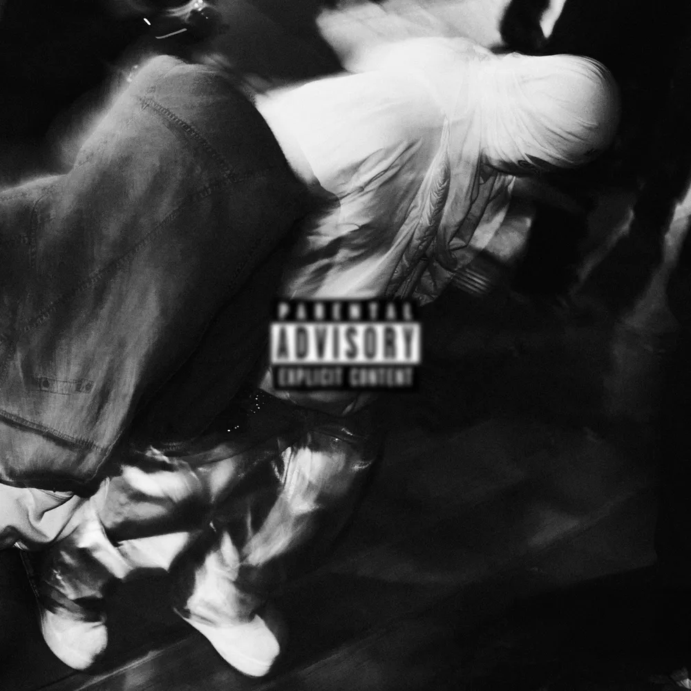
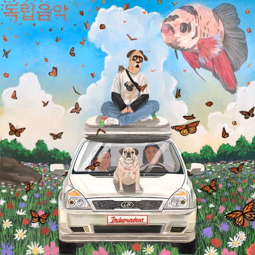
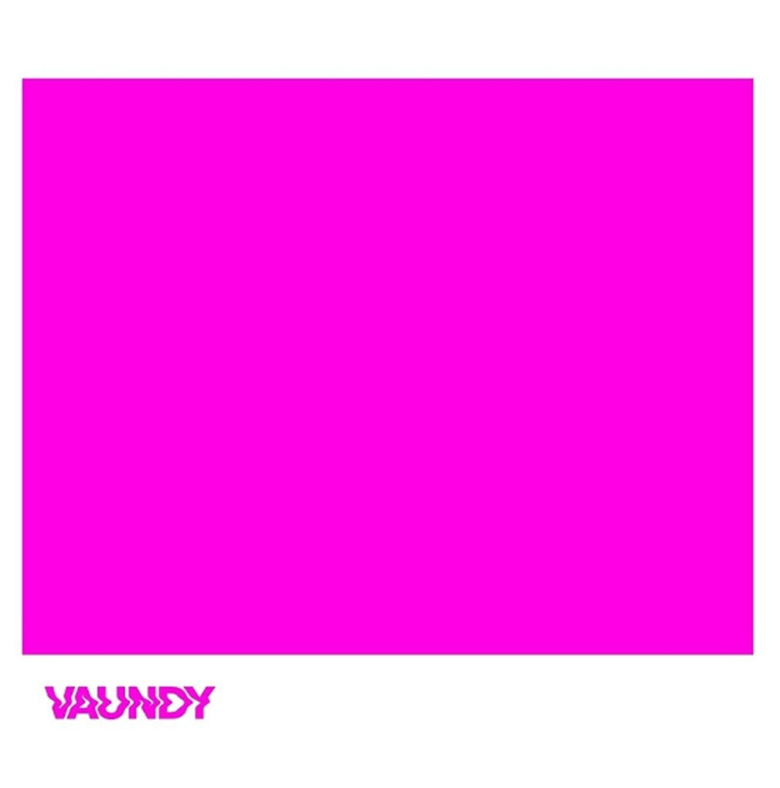
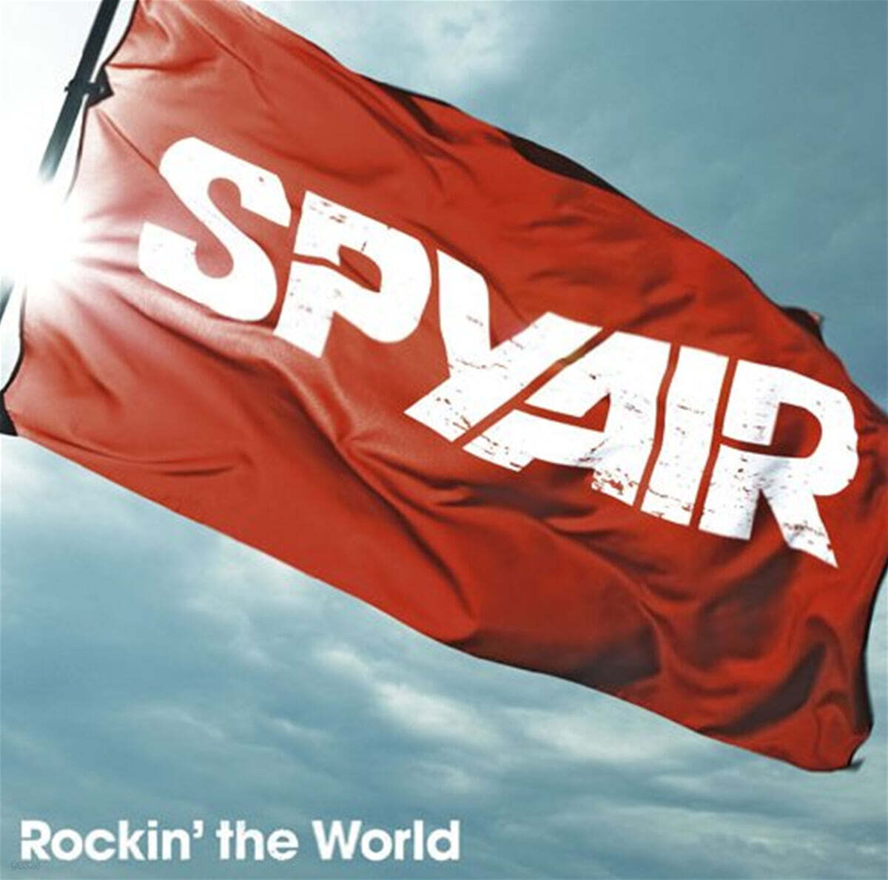
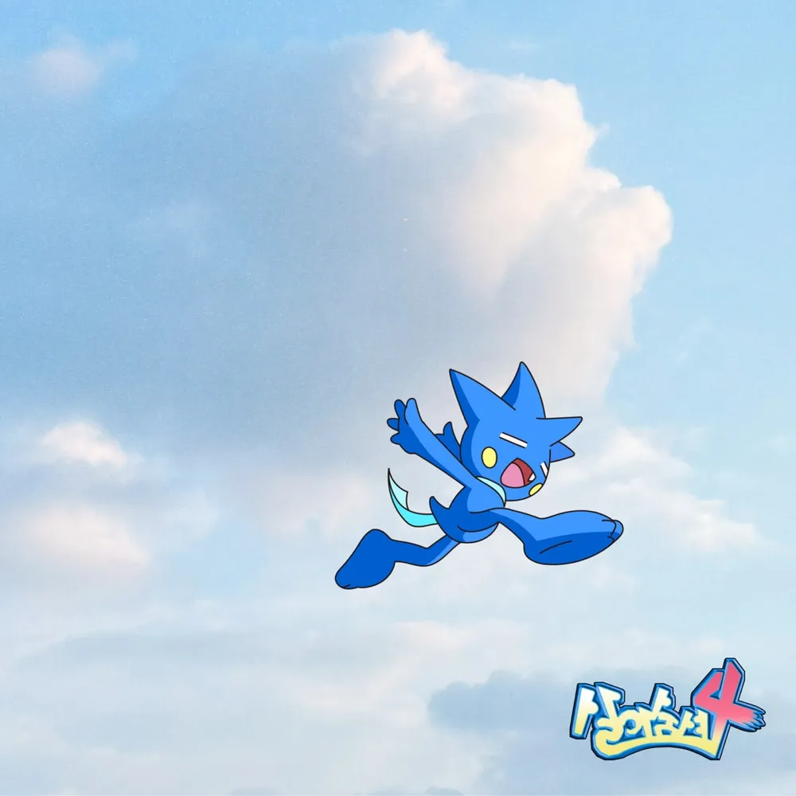
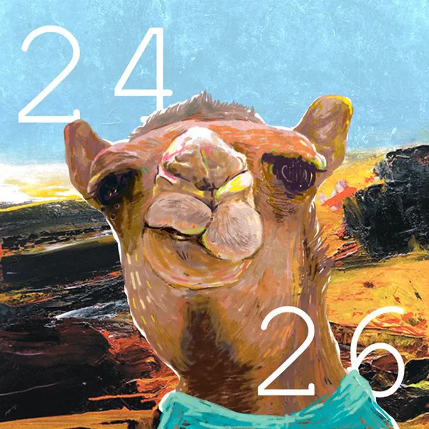

만화: 드래곤볼 (Dragon Ball)
단순한 만화를 넘어 노력과 한계를 돌파하는 모습을 보여준 인생 작품입니다. 특히 천재적인 재능에 안주하지 않고, 라이벌을 보며 끊임없이 자신을 채찍질하며 성장하는 베지터의 모습에서 큰 영감을 얻습니다. 타인과의 비교를 성장의 동력으로 삼는 그의 태도는 제가 지향하는 개발자의 모습이기도 합니다.
No pain No gain
안녕하세요 우아한테크코스 BE 8기 토리입니다.
매일 성장하는 개발자가 되고 싶습니다.
| 이름 | 김윤기 |
|---|---|
| MBTI | ISFP |
| 취미 | 농구, 축구 보기 |
| 좋아하는 음식 | 라멘, 치킨 |
나의 감성을 채워준 9가지 앨범







단순한 만화를 넘어 노력과 한계를 돌파하는 모습을 보여준 인생 작품입니다. 특히 천재적인 재능에 안주하지 않고, 라이벌을 보며 끊임없이 자신을 채찍질하며 성장하는 베지터의 모습에서 큰 영감을 얻습니다. 타인과의 비교를 성장의 동력으로 삼는 그의 태도는 제가 지향하는 개발자의 모습이기도 합니다.
승리를 향한 조던의 압도적인 집념과 팀원들을 이끄는 리더십에 큰 전율을 느꼈습니다. 최고의 자리에 있어도 멈추지 않는 그 열정을 닮고 싶습니다.
오늘 새롭게 배운 것들을 기록합니다.
header, nav, main, section, article, footer 등 시멘틱 태그의 역할과 사용법을 배웠다.